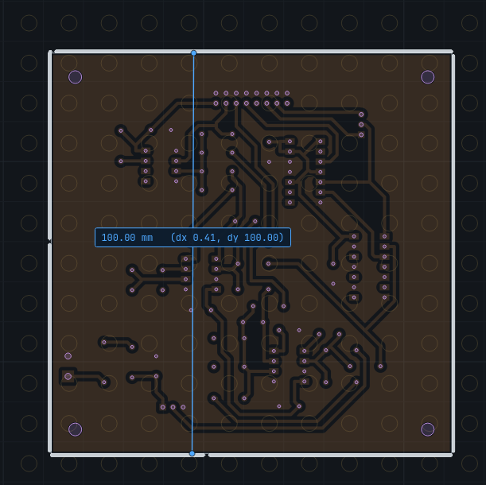

Files & reference
Everything SRM-CAM reads and writes, what is inside the files it sends to the mill, the tool profiles and their numbers, the command line and the keys.
What goes in
| Type | Files | Notes |
|---|---|---|
| Gerber | *-B_Cu.gbr, *-Edge_Cuts.gbr (or .gbl, .gm1) | KiCad's plot: . B.Cu and Edge.Cuts at least; F.Cu (.gtl) for double-sided. |
| Excellon drill | .drl | , millimetres, into the same folder. Split PTH and NPTH files are merged, and a stale combined file beside them is ignored. |
| Setup | .srmcam | The whole job, from (Ctrl+S); back with . The first interface's .json setups load too. |
| Height map | .csv | x_mm, y_mm, dz_mm, with a # face: line saying which face it was probed on. Save… and Load… on . |
| Photo | .png / .jpg | For the overlay: |
What comes out
(Ctrl+E) writes one program per step, in the machine's format, and the run plan beside them. With the lab's one-bit 0.8 mm profile the order is dry run, drill, traces, cut-out; with a different bit for the traces (a V-bit), the traces come before the drill to save bit changes. The cut-out is always last.
| File | Contents |
|---|---|
<name>_airpass.nc | Step 0, the dry run: spindle off, bit 5 mm up, tracing the outline. Single-sided jobs. |
<name>_drill.nc or <name>_drill_<dia>mm.nc | One bit for every hole (the ones that fit are plunged, larger ones milled as circles), or one file per diameter. |
<name>_traces.nc | Isolation, mirrored for the bottom copper; warped to the height map when one is applied. |
<name>_cutout.nc | The outline with four tabs. Always last. |
<name>_runplan.txt | The run sheet as text: order, bit per step, depths, times, where each board of a panel sits. |
<name>_align.nc, _bottom_drill.nc, _bottom_traces.nc, _top_traces.nc | Double-sided, in that order, with the cut-out after the top traces. See Double-sided boards. |
<name>_top_drill.nc | The blind holes finished from the top, on the measured flip. |
<name>_<pass>_rework.nc | A rework program: the pass clipped to your boxes, each at its own depth. Rework. |
<name>_screws.nc + .txt | The hold-down clearance holes and the procedure: |
bed_fixture.nc + .txt | The three dowel-pin holes in the spoilboard, cut once per spoilboard: |
G-code or RML
Picked under , in the Full tier. Keep G-code unless you have a reason not to: the files explain themselves in VPanel.
| G-code (default) | RML | |
|---|---|---|
| File format | Roland SRM-20 (G-code) | Roland SRM-20 |
| Extension | .nc | .rml |
| VPanel command set | NC Code | RML-1 |
| Units | millimetres; feeds in mm/min | 0.01 mm; speeds in mm/s |
| Origin | G54: X, Y at the machine origin, Z zeroed on the copper | the User origin |
| Comments | each file says which step it is | none: only the file name says |
The G-code uses only words on the SRM-20's NC list: plain G0/G1 moves, no arcs or canned cycles, M3/M5 for the spindle and a 2 s G04 pause after M3 so the spindle is up to speed before the bit touches copper. The spindle speed is set in VPanel: the SRM-20 has no S word.
Tool profiles
A profile is the whole set of numbers for all three operations; Apply profile on replaces them all. Built in:
- SRM-20 0.8 mm flat: the lab's profile, and the one that opens applied. One 0.8 mm flat end mill for traces (0.15 mm deep), drill and cut-out (1.7 mm through, four 1.5 mm tabs). One bit, so the drill runs first and nothing is re-zeroed between steps.
- SRM-20 V-bit 30°, 0.1 mm tip: 0.2 mm traces for fine SMD work, with the 0.8 mm bit for holes and outline. Level the bed first: a V-bit's width depends on its depth.
Save as… (Full tier) keeps your own in ~/.gerber2rml/presets.json. A lab can share profiles in a presets.json beside the installed program (in a source checkout, examples/presets.json).
Cutting parameters
On each step's page under , in the Full tier (). In Essential, the profile sets them.
| Parameter | Applies to | Meaning |
|---|---|---|
| Bit diameter | all | The cutter's width, and what the shorts check measures against. |
| Cut depth | traces | Just through the 35 µm foil; the rest is margin for an uneven surface. |
| Isolation passes, pass overlap | traces | Channels per track (-1 clears all the background copper); how far each extra pass steps across. |
| Cut gaps too narrow for the bit | traces | Send the cutter down gaps narrower than the bit anyway, trimming both pads, instead of leaving them shorted. |
| Tip width, included angle, cut width | traces | A V-bit's depth is worked out from the width asked for. |
| Depth through, bite per peck | drill, cut-out | Through the board plus the overshoot into the spoilboard; how much per plunge. |
| One bit for every hole size | drill | Plunge the holes that fit, mill the larger ones as circles. Off: one file per diameter. |
| Holding tabs, tab width | cut-out | What holds the board in the sheet until the end. |
| : across the copper, straight down, lift between cuts | all | Cutting and plunge speed in mm/s; how high the bit lifts between cuts. |
What a setup contains
The boards and where each sits, the job name, the tool profile's numbers, the copper sheet, the screws, how the copper is held and the extra depth, both faces' height maps, the double-sided settings and the measured flip. The Gerber folders are referenced by path: bring them along to another PC. Setups and exports live in Documents\SRM-CAM\sessions and …\exports.
Command line
python -m gerber2rml # the app
python -m gerber2rml.gui # the first interface
python -m gerber2rml.cli <gerber-folder> -o <out> -n <name>
[--gcode | -m "Roland SRM-20"] [--multi-bit] [--no-mirror]
python -m gerber2rml.doctor # fix dependencies after a pullThe command line exports with its own defaults, not the lab profile: pass the numbers you want, or export from the app.
Keys
| Key | Effect |
|---|---|
| Esc | STOP the machine, from anywhere |
| Page Up / Page Down | Raise / lower Z by the step. Lowering is refused while the bit reads Touch. |
| Arrow keys, board picked | Nudge the board 0.1 mm; Shift 1 mm; Ctrl 0.01 mm |
| Arrow keys, Click to jog on | Jog the head 1 mm; Shift 10 mm; Ctrl 0.1 mm |
| Ctrl+O / Ctrl+Shift+O | Open a Gerber folder / add another board to the sheet |
| Ctrl+S / Ctrl+E / Ctrl+Q | Save the setup / export the job / quit |
| Ctrl+0 / Ctrl+Shift+0 / Ctrl+B | Fit the work / fit the whole bed / centre the job on the bed |
| Ctrl+D / Ctrl+G / Ctrl+3 / Ctrl+M | Design X-ray / spoilboard screw grid / watch this step in 3D / measure |
| Ctrl+L | Connect / disconnect the machine link |
| Scroll / right-drag on the stage | Zoom / pan |
Measure
(Ctrl+M): drag a line on the bed. Both ends snap to the board's corners, edges and hole centres and to the copper sheet's corners, so corner to corner reads the board's true size. Ctrl+M again puts the ruler away.
